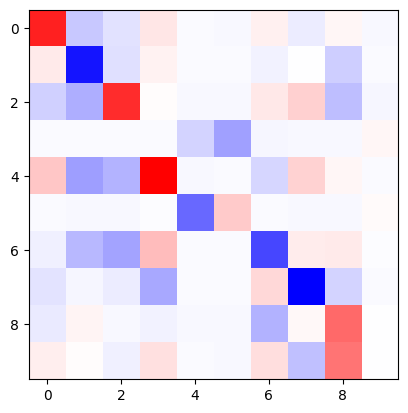
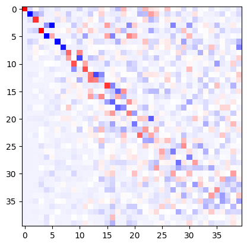

Notebook source code:
notebooks\demos\First-FunctionalMap-Demo.ipynb
Run it yourself on binder

How to compute a correspondence with functional maps#
Importing and visualizing shapes#
First of all, we need to import our data, we will start from a pair of shapes from the TOSCA dataset (https://paperswithcode.com/dataset/tosca)
In [ ]:
import geomstats.backend as gs
from geomfum.dataset import NotebooksDataset
from geomfum.plot import MeshPlotter
from geomfum.shape import TriangleMesh
dataset = NotebooksDataset()
mesh_a = TriangleMesh.from_file(dataset.get_filename("cat-00"))
mesh_b = TriangleMesh.from_file(dataset.get_filename("lion-00"))
INFO: Data has already been downloaded... using cached file ('C:\Users\giuli\.geomfum\data\cat-00.off').
INFO: Data has already been downloaded... using cached file ('C:\Users\giuli\.geomfum\data\lion-00.off').
We can visualize our shapes with the MeshPlotter
In [2]:
# We selct plotting options one for all
PLOT_TYPE = "plotly"
if PLOT_TYPE == "pyvista":
STATIC_VIZ = True
import pyvista as pv
if STATIC_VIZ:
pv.set_jupyter_backend("static")
In [3]:
plotter_a = MeshPlotter.from_registry(which=PLOT_TYPE)
plotter_a.add_mesh(mesh_a)
plotter_a.show()
plotter_b = MeshPlotter.from_registry(which=PLOT_TYPE)
plotter_b.add_mesh(mesh_b)
plotter_b.show()
Data type cannot be displayed: application/vnd.plotly.v1+json
Data type cannot be displayed: application/vnd.plotly.v1+json
Compute Basis#
In [4]:
k = 50 # we select the number of basis that we want to compute
mesh_a.laplacian.find_spectrum(spectrum_size=k, set_as_basis=True)
mesh_b.laplacian.find_spectrum(spectrum_size=k, set_as_basis=True)
C:\Users\giuli\OneDrive\Research\geomfum_proj\geomfum\geomfum\_backend\pytorch\sparse.py:22: UserWarning:
Sparse CSC tensor support is in beta state. If you miss a functionality in the sparse tensor support, please submit a feature request to https://github.com/pytorch/pytorch/issues. (Triggered internally at C:\actions-runner\_work\pytorch\pytorch\pytorch\aten\src\ATen\SparseCsrTensorImpl.cpp:55.)
Out [4]:
(tensor([-4.3451e-14, 1.0869e+01, 1.8132e+01, 2.9081e+01, 3.0617e+01,
3.1265e+01, 4.7848e+01, 8.7850e+01, 1.4047e+02, 1.4786e+02,
1.4916e+02, 1.7286e+02, 1.7664e+02, 2.0781e+02, 2.4486e+02,
2.7682e+02, 3.0014e+02, 3.0193e+02, 3.3179e+02, 3.7673e+02,
3.8068e+02, 4.3919e+02, 4.4043e+02, 4.6787e+02, 5.0161e+02,
5.4175e+02, 5.5153e+02, 5.6814e+02, 5.7324e+02, 6.2796e+02,
6.5008e+02, 6.7062e+02, 6.8278e+02, 7.1200e+02, 7.4217e+02,
7.7699e+02, 7.8855e+02, 8.2038e+02, 8.4017e+02, 8.8244e+02,
9.0125e+02, 9.0519e+02, 9.4069e+02, 9.6794e+02, 1.0122e+03,
1.0214e+03, 1.0253e+03, 1.0854e+03, 1.1144e+03, 1.1559e+03]),
tensor([[-1.3599, 0.4009, -0.4172, ..., 0.3992, -0.5306, 1.6382],
[-1.3599, 0.6418, -0.5256, ..., 0.0769, -0.5751, 1.9800],
[-1.3599, 0.6387, -0.5314, ..., 0.4190, -0.4301, 1.5655],
...,
[-1.3599, 4.0142, 8.2974, ..., 2.3272, -0.0134, 0.0122],
[-1.3599, 4.0072, 8.2731, ..., 1.9027, -0.0109, 0.0098],
[-1.3599, 0.3975, -0.4205, ..., 0.4756, -0.3916, 1.2386]]))
Here we display two eigenfunctions on the shape.
In [5]:
plotter_a.colormap = plotter_b.colormap = "RdBu"
plotter_a.set_vertex_scalars(mesh_a.basis.vecs[:, 2])
plotter_a.show()
plotter_b.set_vertex_scalars(mesh_b.basis.vecs[:, 2])
plotter_b.show()
Data type cannot be displayed: application/vnd.plotly.v1+json
Data type cannot be displayed: application/vnd.plotly.v1+json
Compute Descriptors#
In [6]:
from geomfum.descriptor.pipeline import (
ArangeSubsampler,
DescriptorPipeline,
L2InnerNormalizer,
)
from geomfum.descriptor.spectral import WaveKernelSignature
In [7]:
mesh_a.landmark_indices = gs.array([2840, 1594, 5596, 6809, 3924, 7169])
mesh_b.landmark_indices = gs.array([1334, 834, 4136, 4582, 3666, 4955])
In [8]:
steps = [
WaveKernelSignature.from_registry(n_domain=50, use_landmarks=True),
ArangeSubsampler(subsample_step=1),
L2InnerNormalizer(),
]
pipeline = DescriptorPipeline(steps)
descr_a = pipeline.apply(mesh_a)
descr_b = pipeline.apply(mesh_b)
In [9]:
plotter_a.colormap = plotter_b.colormap = "viridis"
plotter_a.set_vertex_scalars(descr_a[0])
plotter_a.show()
plotter_b.set_vertex_scalars(descr_b[0])
plotter_b.show()
Data type cannot be displayed: application/vnd.plotly.v1+json
Data type cannot be displayed: application/vnd.plotly.v1+json
Optimize Functional Map#
Now, we have all the elements to optimize our first functional maps.
In [10]:
from geomfum.functional_map import (
FactorSum,
LBCommutativityEnforcing,
OperatorCommutativityEnforcing,
SpectralDescriptorPreservation,
)
from geomfum.numerics.optimization import ScipyMinimize
We select the numbr of eigenfunctions we want to use.
In [11]:
mesh_a.basis.use_k = 10
mesh_b.basis.use_k = 10
The optimization of the functional map can be performed considering different constraints, for example:
SpectralDescriptorPreservation: the functional map needs to align spectral coefficients of descriptors.
LBCommutativityEnforcing: the functional map needs to commute with the Laplace Beltrami operator.
OperatorCommutativityEnforcing: the functional map needs to commute with a chosen operator defined on meshes.
Details about these energies can be found in https://dl.acm.org/doi/10.1145/3084873.3084877.
In [12]:
factors = [
SpectralDescriptorPreservation(
mesh_a.basis.project(descr_a),
mesh_b.basis.project(descr_b),
weight=1.0,
),
LBCommutativityEnforcing.from_bases(
mesh_a.basis,
mesh_b.basis,
weight=1e-2,
),
OperatorCommutativityEnforcing.from_multiplication(
mesh_a.basis, descr_a, mesh_b.basis, descr_b, weight=1e-1
),
OperatorCommutativityEnforcing.from_orientation(
mesh_a, descr_a, mesh_b, descr_b, weight=0
),
]
Once we have instantiated the constraints with respective weights we can optimize the map.
In [13]:
objective = FactorSum(factors)
optimizer = ScipyMinimize(
method="L-BFGS-B",
)
x0 = gs.zeros((mesh_b.basis.spectrum_size, mesh_a.basis.spectrum_size))
res = optimizer.minimize(
objective,
x0,
fun_jac=objective.gradient,
)
fmap = res.x.reshape(x0.shape)
We show the obtained functional maps.
In [14]:
import matplotlib.pyplot as plt
plt.imshow(fmap, cmap="bwr")
Out [14]:
<matplotlib.image.AxesImage at 0x1b069344b90>

Get the correspondence#
Once we have the functional map, we can compute the point-to-point correspondence performing a nearest search in the space of function.
In [15]:
from geomfum.convert import P2pFromFmConverter
p2p_converter = P2pFromFmConverter()
p2p = p2p_converter(fmap, mesh_a.basis, mesh_b.basis)
We can visualize the quality of the mapping on the shapes by transfering a vertex scalar.
In [16]:
scalar_a = gs.mean(mesh_a.vertices, axis=-1)
plotter_a.set_vertex_scalars(scalar_a)
plotter_a.show()
plotter_b.add_mesh(mesh_b)
plotter_b.set_vertex_scalars(scalar_a[p2p])
plotter_b.show()
Data type cannot be displayed: application/vnd.plotly.v1+json
Data type cannot be displayed: application/vnd.plotly.v1+json
Refining the correspondence#
A lot of time, a small number of basis is not enough to have a good correspondence, for this reason a lot of methods are based on a ‘refinement’ stage.
In [17]:
from geomfum.refine import ZoomOut
In [18]:
zoomout = ZoomOut(nit=6, step=5)
zoomout_fmap_matrix_ = zoomout(fmap, mesh_a.basis, mesh_b.basis)
p2p_ref = p2p_converter(zoomout_fmap_matrix_, mesh_a.basis, mesh_b.basis)
In [19]:
plt.imshow(zoomout_fmap_matrix_, cmap="bwr")
Out [19]:
<matplotlib.image.AxesImage at 0x1b0697e4850>

In [20]:
scalar_a = gs.mean(mesh_a.vertices, axis=-1)
plotter_a.set_vertex_scalars(scalar_a)
plotter_a.show()
plotter_b.add_mesh(mesh_b)
plotter_b.set_vertex_scalars(scalar_a[p2p_ref])
plotter_b.show()
Data type cannot be displayed: application/vnd.plotly.v1+json
Data type cannot be displayed: application/vnd.plotly.v1+json